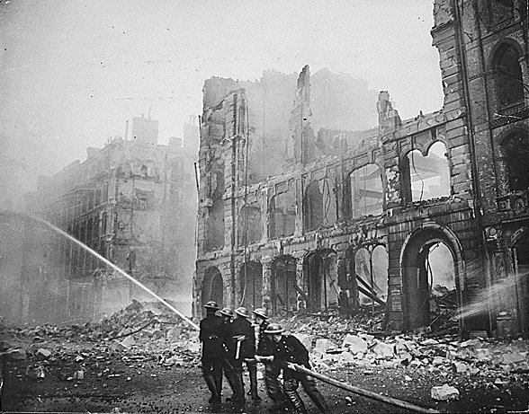
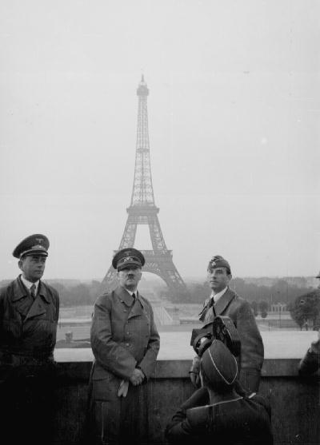
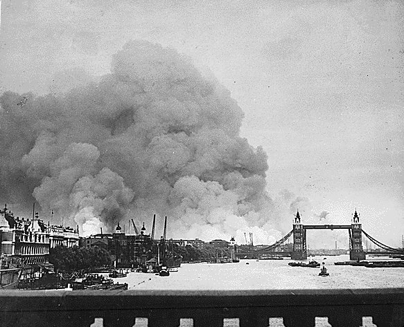
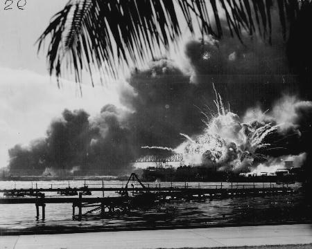
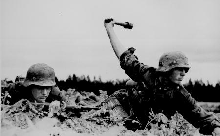
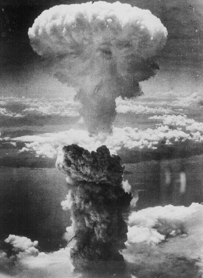

1939-1945
L'ANDAMENTO DELLA GUERRA
1939
1940
1941
1942
1943
1944
1945
Hiroshima
e Nagasaki
Auschwitz
Primo
Levi
Italo
Calvino
Seconda
Guerra Mondiale
Indice
1939
In marzo la Germania occupa
l’Austria e successivamente si rivolge verso la Cecoslovacchia, per impossessarsi
dei centri metallurgici e siderurgici più importanti dell’Europa
centro-orientale. Nonostante un recente accordo tra Gran Bretagna, Francia,
Italia e Germania, i tedeschi occupano tutta la Cecoslovacchia.
In aprile l’Italia attacca
l’Albania; la corona albanese passa a Vittorio Emanuele III.
In maggio Italia e Germania
firmano un patto d’acciaio che prevedeva l’intervento militare automatico
a fianco dell’alleato che fosse entrato in guerra. Firmando il patto, l’Italia,
che era del tutto impreparata ad una guerra di grandi dimensioni, era in
balìa dell’aggressivo espansionismo tedesco, che sembrava inevitabilmente
portare alla guerra.
In agosto Germania e
Unione Sovietica firmano un patto di non aggressione: la Germania si assicurava
la neutralità dell'URSS sul fronte orientale in cambio della spartizione
della Polonia.
Il primo settembre la
Germania attacca a sorpresa la Polonia puntando direttamente a conquistare
Varsavia: i carri armati e gli aerei tedeschi liquidarono le forze polacche
in meno di un mese. La Gran Bretagna e la Francia intervennero dichiarando
guerra alla Germania.
Il governo di Mosca decise
di intervenire (17 settembre), e, forte dell'avanzata delle sue truppe
nella Polonia orientale, pretese la propria parte nella spartizione del
paese
Patto tripartito tra
Germania, Italia e Giappone (27 settembre)
Mentre subentrava un
certo stallo generale, tanto che i Francesi e i Tedeschi si fronteggiavano
dietro le rispettive linee di difesa praticamente senza combattere («drole
de guerre», la strana guerra), nell'inverno del 1939-1940 l'Armata
rossa continuò, avanzando, a consolidare il proprio fronte: occupò
la Lituania, la Lettonia e l'Estonia, regioni di confine ritenute indispensabili
per la sicurezza dell'Unione Sovietica, sempre per lo stesso motivo fu
deciso l'attacco alla Finlandia (dicemnre 1939-marzo 1940).
Inizio
1940
Sopraggiunta la primavera,
il 9 aprile riprese l'iniziativa tedesca con l'attacco alla Danimarca (occupata
senza difficoltà) e alla Norvegia (definitivamente caduta solo il
10 giugno); in questo modo la Germania coinvolse la Scandinavia nel conflitto
nel puro interesse di accerchiare la Gran Bretagna. Mentre l'esercito tedesco
stava completando l'invasione della Norvegia, Hitler decise di attaccare
la Francia. L'operazione militare venne condotta con notevole abilità
tattica («Piano Manstein»): le truppe tedesche invasero Belgio
ed Olanda e puntarono poi su Parigi. Dal 10 maggio l’attacco tedesco si
concentrò sulle Ardenne circondando gli eserciti francese, inglese
e belga. Il corpo di spedizione inglese e parte dell’esercito francese
furono salvati dall’annientamento a Dunkerque, dove vennero reimbarcati
per l’Inghilterra.
L'Olanda e il Belgio
deposero le armi rispettivamente il 15 e il 28 maggio. Il fronte francese
fu completamente scompaginato (5-9 giugno) sulla Somme e poi sull'Aisne;
il 10 giugno Hitler entrò a Parigi ed il 22 la Francia fu costretta
a cedere le armi firmando (a Compiègne) l'armistizio con la Germania
e con l'Italia (24 giugno). Desideroso di "sedersi al tavolo dei vincitori"
quando sembrava che la guerra dovesse finire, Mussolini aveva deciso proprio
il 10 giugno di entrare in guerra ordinando l'immediato attaccodell'Italia
alla Francia, peraltro con risultati poco apprezzabili, essendosi risolto
nell'occupazione di alcune zone lungo il confine italo–francese. La Francia
veniva divisa in due parti: a Nord sotto la diretta occupazione tedesca,
a Sud sotto il controllo di un governo collaborazionista con sede a Vichy
e con a capo il maresciallo Pétain.
Tra agosto e settembre,
sull'onda del successo conseguito in Francia, i Tedeschi tentarono la mossa
decisiva: lo sbarco sulle coste britanniche (l'operazione venne chiamata
"Leone marino"). Ma lo scontro che ne seguì, noto come la "battaglia
d'Inghuilterra", segnò il primo fallimento tedesco, tanto che il
17 settembre Hitler si trovò costretto a rinviare a tempo indeterminato
ogni ulteriore tentativo in proposito e a limitarsi ad un'azione di bombardamento
sulle città inglesi. Che non durò a lungo, a causa dell'accanita
resistenza da parte della Royal Air Force la Luftwaffe dovette alla fine
desistere dagli attacchi aerei in massa. Fallì anche il tentativo
di attaccare Gibilterra dall'entroterra perché Berlino non riuscì
a convincere il generalissimo Franco ad accettare la richiesta di far passare
le truppe tedesche sul territorio spagnolo.
Nel frattempo l'Italia
aveva accresciuto il proprio raggio di azione attaccando gli Inglesi nel
Mediterraneo (Malta) e in Africa (Sudan e Somalia inglese, agosto 1940).
Tuttavia i successi conseguiti furono assai modesti e rivelarono ampiamente
l'inefficienza e l'impreparazione del nostro esercito. Allo stesso modo
l'attacco condotto dall'Italia alla Grecia (28 ottobre 1940) si tradusse
in un nulla di fatto.
Inizio
1941
Sollecitata dagli insuccessi
dell'esercito italiano che stavano traducendosi in una pericolosa disfatta,
la Germania fu costretta ad intervenire in soccorso del proprio alleato:
vennero pertanto inviate truppe tedesche sia in Africa, sotto il comando
del generale Erwin Rommel che riuscì a riconquistare la Cirenaica
(marzo-aprile) ma non l'Etiopia, sia, dopo l'occupazione della Romania,
nei Balcani, dove conseguirono la conquista della Bulgaria, della Grecia
(capitolata il 21 aprile) e dell'isola di Creta.
Agli inizi di giugno
le truppe tedesche e italiane conquistano la Yugoslavia, la Grecia e la
Bulgaria; la Croazia, retta da una dittatura fascista, acquistava autonomia
e la Slovenia passava all’Italia. Si chiudeva la prima fase del conflitto
(la «guerra lampo»): l’asse aveva il predominio totale nei
Balcani e nell’Europa centrale; l’Inghilterra aveva invece conservato il
controllo dell'Africa.
Il 21 giugno, ripudiando
il «patto di non aggressione» del 1939, la Germania, nella
speranza di convincere la Gran Bretagna a trattare la pace per unirsi contro
il comune nemico sovietico, attacca l'Unione Sovietica («piano Barbarossa»).
Il "piano Barbarossa" prevedeva, in coerenza con i dettami della "guerra
lampo", il rapido annientamento della resistenza nemica. Aiutate dalla
Romania, dalla Finlandia e dall'Ungheria, le truppe dell'Asse invasero
l’Unione Sovietica occupando in pochi mesi la Bielorussia, l’Ucraina, la
Crimea. Tentarono anche di spingersi fino a Mosca e a Leningrado ma i Russi
resistettero e le truppe dell'Asse si trovarono l'esecito sovietico di
fronte e la guerriglia partigiana nelle retrovie.
In agosto Inghilterra
e Stati Uniti fissano in una Carta atlantica i principi democratici della
lotta contro il nazismo.
Verso
la fine dell'anno, in un momento in cui il potenziale militare statunitense,
quasi inesistente nel 1940, era ancora lontano da un soddisfacente grado
di efficienza, il Giappone, deciso ad eliminare ogni concorrenza sul Pacifico,
attacca violentemente la base navale di Pearl Harbour nelle Hawaii, dove
si trovava la maggior parte della flotta degli Stati Uniti che furono così
trascinati nel conflitto. L'11 dicembre anche Italia e Germania dichiarano
guerra agli Stati Uniti.
Inizio
1942
I successi giapponesi nei
primi mesi di guerra furono straordinari: nel giro di pochi mesi essi riuscirono
ad occupare vastissimi territori. Grazie ad una serie di operazioni aeronavali
i Giapponesi conquistarono le Filippine, la Malesia (gennaio) e Singapore
(febbraio) che divennero basi d'attacco per la conquista dell'Indonesia
effettuata fra gennaio e marzo e facilitata dall'annientamento delle forze
navali alleate (battaglia del mar di Giava). Ma già ad agosto la
loro massima espansione era raggiunta. Gli Alleati reagirono con forza
ed efficacia; la loro controffensiva a Guadalcanal (agosto) segnò
la fine dell'avanzata giapponese.
Vinti i Tedeschi nella
"battaglia dell'Atlantico", gli Anglo-Americani volsero il loro impegno
in Africa. L'offensiva alleata, sotto il comando del generale inglese Montgomery,
culminò nella vittoriosa battaglia di El Alamein (23 ottobre, 3-4
novembre). Agli Italo-Tedeschi sconfitti non rimase che ripiegare perdendo
rapidamente il controllo dell'intera Africa.
L'8 novembre gli Alleati
sbarcano in Marocco e in Algeria. Dopo una breve fase di resistenza fittizia,
le truppe francesi di Vichy dell'Africa settentrionale si schierarono a
fianco degli Alleati e marciarono verso la Tunisia (13 novembre).
La reazione di Hitler
fu immediata: l'11 novembre la Wehrmacht invase la zona meridionale della
Francia, già sotto il controllo del governo di Vichy, mentre forze
italiane occupavano Nizza e la Corsica; il 27 novembre il cosiddetto esercito
francese d'armistizio fu sciolto e la flotta francese di Tolone si autoaffondò
per non cadere nelle mani dei tedeschi.
Nel frattempo, il tremendo
scontro russo-tedesco, protrattosi per tutto l'anno entrava nella fase
decisiva: dopo aver bloccato l'offensiva generale tedesca lanciata nel
mese di giugno i Sovietici erano passati al contrattacco impegnando duramente
i Tedeschi a Stalingrado (luglio 1942-febbraio 1943).
Inizio
1943
Il 1943 fu il primo anno
di guerra in cui le forze dell’Asse si trovarono in difficoltà a
causa delle reazioni degli alleati e dello sviluppo della resistenza popolare
in tutti i paesi occupati. Contro l’oppressione insostenibile del nazifascismo,
in tutta Europa sorgono movimenti di lotta clandestina che si coagulano
nella Resistenza armata dei singoli Paesi occupati: in Polonia insorge
eroicamente il ghetto di Varsavia;; in URSS l’esercito regolare è
appoggiato dai partigiani; in Jugoslava il comandante Tito guida la riscossa
contro le truppe tedesche; la Grecia resiste a ben tre eserciti invasori
(tedesco, italiano, bulgaro); in Francia le formazioni clandestine vengono
unificate sotto la direzione del generale De Gaulle, fuoriuscito in Inghilterra.
Ovunque la Resistenza assume l’aspetto di una lotta di popolo, trasformandosi
talvolta in rivolta sociale, talaltra in guerra civile (tra partigiani
e collaborazionisti).
A gennaio gli Italo-Tedeschi
sono costretti ad abbandonare la Libia; in marzo gli Anglo-Americani, dopo
aver occupato l'Algeria e il Marocco, penetrano in Tunisia; a maggio tutto
il Nord Africa è nelle loro mani.
A febbraio viene completata
la conquista di Guadalcanal nell'Oceano Pacifico e a Stalingrado i Sovietici
infliggono una pesantissima sconfitta ai Tedeschi costringendoli alla resa
(2 febbraio). Era l'inizio della disfatta. Nonostante i tentativi compiuti
i Tedeschi non riuscirono più a raggiungere alcun successo significativo
sul suolo russo, trascinando nella tragedia della ritirata i loro alleati.
Due mesi dopo la conquista
dell'Africa, il 10 luglio gli Alleati sbarcano in Sicilia e respingono
le forze italo-tedesche dall'isola dopo oltre un mese di combattimenti;
quindi passano in Calabria (2-3 settembre) mentre l'Italia si arrendeva
senza condizioni (8 settembre). La mattina del giorno seguente all'armistizio
di Cassibile gli Anglo-Americani operano uno sbarco a Salerno. Ai primi
di ottobre gli Alleati entrano a Napoli (dove nel frattempo i Napoletani,
insorti, avevano cacciati i Tedeschi) ma la loro avanzata verso il Nord
è bloccata sul Garigliano e il Sangro, sulla "Linea Gustav", un
fronte che aveva in Cassino il principale centro di resistenza.
Nel mese di luglio in
Italia si verificano avvenimenti decisivi: caduta di Mussolini (23-25 luglio),
costituzione di un governo diretto dal maresciallo Badoglio, richiesta
agli Alleati dell'armistizio (firmato a Cassibile il 3 settembre e reso
pubblico l'8). Iniziava per l'Italia un periodo particolarmente travagliato.
L'armistizio, infatti, venne comunicato alla popolazione e all'esercito
senza che si fornissero nel contempo quelle indicazioni operative indispensabili
a fronteggiare la nuova situazione crestasi. Nel caos più assoluto,
con l'esercito allo sbando, il 9 settembbre il re e Badoglio abbandonarono
Roma per trasferirsi a Sud, mentre i Tedeschi, da tempo attenti all'evoluzione
della situazione italiana, si accingevano ad occupare il paese, annientando
nel sangue ogni resistenza.
Nel frattempo Mussolini,
arrestato il 25 luglio a Roma, viene trasferito prima all'isola di Ponza,
poi alla Maddalena e infine a Campo Imperatore sul Gran Sasso, dove il
12 settembre fu liberato con un'ardita azione dal colonnello tedesco Skorzeny
e trasferito in Germania. Poco dopo Mussolini, sotto la protezione dei
Tedeschi, costituiva nell'Italia settentrionale, a Salò, un nuovo
stato fascista che assunse il nome di Repubblica Sociale Italiana con capitale
a Salò sul Lago di Garda (23 settembre).
Il governo Badoglio,
dopo aver firmato il 29 settembre a Malta un nuovo armistizio ("armistizio
lungo"), dichiara guerra alla Germania il 13 ottobre e un mese dopo viene
riconosciuto dagli Alleati come cobelligerante.
La Bulgaria capitola
subito dopo che il suo territorio era stato attaccato dall'Armata rossa
(5-6 settembre). Romania e Bulgaria si schierano contro il Reich.
Inizio
1944
Tedeschi
e Giapponesi sono costretti ad arretrare su tutti i fronti. In Italia gli
Alleati, che avevano operato uno sbarco in forze ad Anzio (22 gennaio),
dovettero condurre una lunga e accanita battaglia per occupare il settore
di Cassino e ottenere così la rottura del fronte (maggio). La loro
avanzata proseguì poi verso Roma, raggiunta tra il 4 e il 5 giugno,
Livorno (19 luglio) e Firenze (agosto), ma i Tedeschi costituirono una
nuova linea di difesa più a nord, la cosiddetta «linea gotica»,
a ridosso della quale le operazioni ebbero un periodo di stasi durante
l'inverno.
Nella notta tra il 5
e il 6 giugno del 1944 le truppe alleate, poste sotto il comando del generale
americano Eisenhower, affrontarono i Tedeschi sul fronte normanno e il
26 agosto il generale De Gaulle entra trionfalmente a Parigi. Alla fine
di settembre la Francia e il Belgio erano quasi del tutto liberati. Il
16 dicembre von Rundstedt lanciò l'ultima controffensiva della Wehrmacht
nelle Ardenne, che venne affiancata da attacchi tra la Saar e il Reno.
Inizio
1945
Ormai era il crollo: presa
tra due fuochi, ad Ovest dagli Anglo-Americani e ad Est dai Sovietici,
la Germania si difese con accanimento ma senza alcuna possibilità
di successo. L'Armata Rossa, dopo aver occupato Polonia, Cecoslovacchia
e Ungheria, entrava in Germania ed Austria: Vienna cadeva il 13 aprile.
Gli Alleati superarono il Reno in più punti (marzo), proseguendo
rapidamente la loro avanzata verso il cuore della Germania, che, sottoposta
a durissimi bombardamenti aerei, era ormai ridotta allo stremo. I Francesi
si impadronirono di Stoccarda e gli Americani invasero la Baviera e raggiunsero
Monaco (29 aprile).
In Italia, dopo la stasi
invernale, il generale Clark e il maresciallo Alexander lanciarono un'offensiva
generale su tutto il fronte che portò le truppe alleate a raggiungere
i principali centri dell'Italia settentrionale dove il 25 aprile il generale
Cadorna, comandante militare del CLNAI, aveva ordinato l'insurrezione generale
delle forze partigiane,
che a partire dalla fine del 1943 avevano impegnato sempre più seriamente
i Tedeschi e i fascisti.
La resa delle forze tedesche
avvenne per gradi: a Caserta (29 aprile) per le truppe in Italia e Austria;
a Luneburgo (4 maggio) per quelle in Vestfalia, Danimarca e Olanda; a Reims,
infine, la resa incondizionata nelle mani dei comandanti in capo alleati,
firmata il 7 maggio e confermata l'8 maggio a Berlino dal governo dell'ammiraglio
Donitz, succeduto a Hitler che si era suicidato il 30 aprile.
L'Europa centrale si
riorganizzò: l'Austria proclamò la propria indipendenza (14
maggio), il governo Benes rientrò a Praga (10 maggio) ma dovette
riconoscere l'annessione da parte dell'URSS della Russia subcarpatica (che
era cecoslovacca nel 1938). Sorsero inoltre numerose altre difficoltà:
questione di Trieste tra la Iugoslavia di Tito e l'Italia per il possesso
della città e delle zone circostanti (aprile-maggio); rivolte in
Algeria (maggio); ritorno di Pétain in Francia (26 aprile) dove
fu arrestato in attesa del processo (23 luglio - 15 agosto); movimenti
antifrancesi in Siria e nel Libano, favoriti dalla tensione che oppose
i governi di Londra e Parigi su tale questione; crisi dinastica in Belgio.
Rimaneva aperto il fronte
asiatico, dove i Giapponesi resistevano oltre ogni previsione. Per piegare
la resistenza del Giappone e dunque riaprmiare milioni di vite, questa
fu la motivazione ufficiale alla quale va tuttavia aggiunta la volontà
di dimostrare soprattutto all'URSS la superiorità militare raggiunta
(lo scenario è ormai da "guerra fredda"), il nuovo presidente degli
Stati Uniti, Harry Truman (1884-1972), decise di usare la nuova
tremenda arma nucleare di recente fabbricazione.
Il 6 agosto 1945 una
bomba atomica radeva quasi completamente al suolo Hiroshima causando la
morte di oltre 90.000 persone; il 9 agosto era la volta di Nagasaki. Il
giorno avanti, l'8 agosto, l'Unione Sovietica dichiarava guerra al Giappone,
aprendo le ostilità in Manciuria e in Corea. Gli effetti delle bombe
atomiche furono devastanti anche sul morale dei Giapponesi: le ostilità
vennero sospese il 16 agosto e la capitolazione fu firmata il 2 settembre
a bordo della corazzata «Missouri» nella rada di Tokyo.
Si chiudeva finalmente
la seconda guerra mondiale: aveva causato circa 50 milioni di morti, oltre
a un numero imprecisato di feriti, di dispersi e atroci conseguenze, a
quel momento difficilmente valutabili, soprattutto per gli scampati di
Hiroshima
e Nagasaki.
Inizio